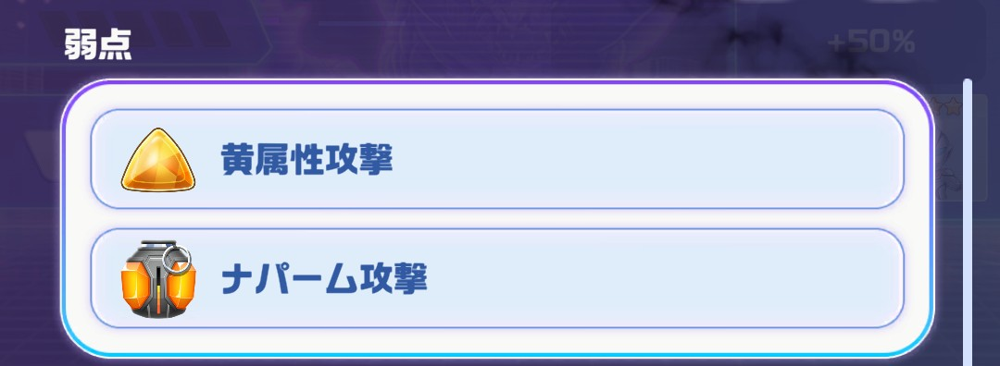
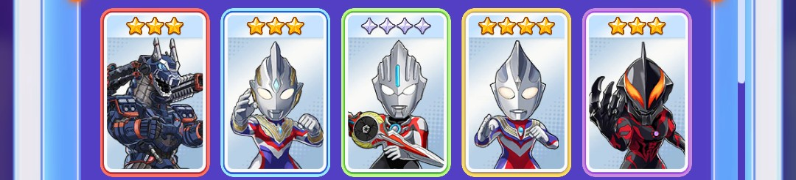
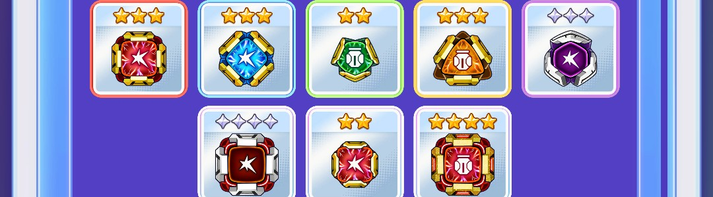
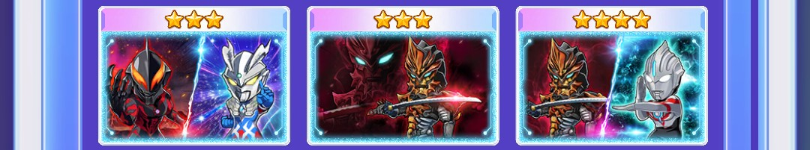
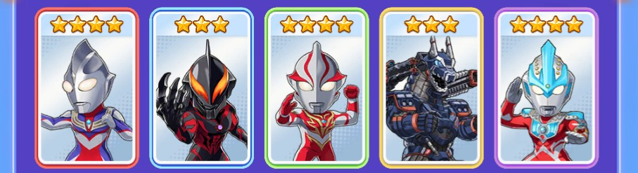
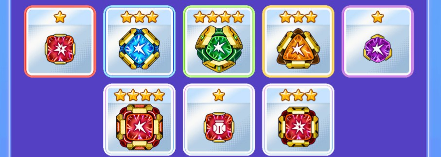
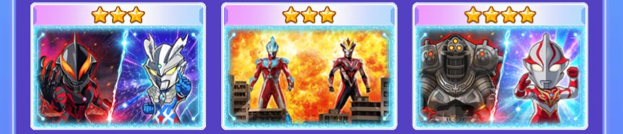

パズシュワ攻略まとめ
現イベント解説(怪獣襲来 スカルゴモラ)
基本情報
・ピース操作で移動元の移動先との掛け合わせをすると移動元の属性になる
例えば、青必殺技玉を操作して赤必殺技に掛け合わせると青属性の合体必殺技となる
・サークルをタップした際に消去(選択される)色はピースは盤面で一番多い色が選ばれる
※同数の場合は盤面左上から→に見て最初に出てきた色となる
・必殺技玉をピッケルで壊すとターン消費せずそのターンから必殺技の効果を受けられます。
例えば、アストラの1ターン青属性の攻撃UPについてはピッケルを使用したターンとその次のターンまで
効果が及ぶので通常使用したときよりも1ターン多く恩恵が受けられます。
攻略情報
攻略のポイント
スカルゴモラは黄属性やナパームが弱点になっていますが
黄属性強化はしてもあまり効果が見込めないため通常パーティかBBナパーム編成がオススメです。

確定サークル
オススメパーティ(通常)
キャラ

・🟥赤キャラ→アースガロンMod.2
・🟦青キャラ→ウルトラマントリガー(マルチタイプ)
・🟩緑キャラ→ウルトラマンオーブ(オーブオリジン)
・🟨黄キャラ→ウルトラマンティガ(マルチタイプ)
・🟪紫キャラ→ウルトラマンベリアル
キャラ入れ替え候補
・アースガロンMod.2→なし
・トリガー→なし
・オーブ→オーブオリジウム光線
・ティガマルチ→ティガタイプチェンジ
・ベリアル→なし
コア

・🟥赤コア→☆3Rアタックコア(通常攻撃UP)
・🟦青コア→☆3Bアタックコア(通常攻撃UP)
・🟩緑コア→☆2Gナパームコア(ナパームUP)
・🟨黄コア→☆3Yナパームコア(ナパームUP)
・🟪紫コア→◇3Pアタックコア(通常攻撃UP)
・⬜自由枠コア→◇4Pアタックコア(通常攻撃UP)
・⬜自由枠コア→☆2Rアタックコア(通常攻撃UP)
・⬜自由枠コア→☆4Rナパームコア(ナパームUP)
コア入れ替え候補
・🟥赤コア→通常攻撃UPもしくはナパームUP
・🟦青コア→通常攻撃UPもしくはナパームUP
・🟩緑コア→通常攻撃UPもしくはナパームUP
・🟨黄コア→通常攻撃UPもしくはナパームUP
・🟪紫コア→通常攻撃UPもしくはナパームUP
・⬜自由枠コア→通常攻撃UPもしくはナパームUP
・⬜自由枠コア→通常攻撃UPもしくはナパームUP
・⬜自由枠コア→通常攻撃UPもしくはナパームUP
リンクカード

・ゼロVSベリアル
・ジャグラスジャグラー-神出鬼没の無限魔神-
・オーブVSジャグラー
・ティガ関連のカードも候補
ウルトラメカ
・優先順位1 通常強化
・優先順位2 ナパーム強化
・優先順位3 弱点強化
立ち回り
このパーティの戦略としてはとにかくたくさんのピースを消すことを目的とします。
ボーナスの残ピースを見ながらボーナスにあわせてコンビネーション攻撃ができるようにしましょう。
敵の防御ステータスがそれぞれ赤→85,青→85,緑→1000,黄→10,紫→1000なので
コンビネーション攻撃するときには数字が低いものから動かして数字が高いものに掛け合わせてください
例 黄と紫が隣同士であれば黄の防御力が紫より低いので黄を動かして紫に掛け合わせる
コンビネーション攻撃ができないときはアースガロンやトリガーの必殺技を単体発動しても良いです。
オススメパーティ(BB/ナパーム)
キャラ

・🟥赤キャラ→ウルトラマンティガ(タイプチェンジ)
・🟦青キャラ→ウルトラマンベリアル
・🟩緑キャラ→ウルトラマンメビウス(バーニングブレイブ)
・🟨黄キャラ→アースガロンMod.2
・🟪紫キャラ→ウルトラマンギンガ(ギンガストリウム)
キャラ入れ替え候補
・ティガタイプチェンジ→タロウダイナマイト
・ベリアル→なし
・メビウスBB→なし
・アースガロンMod.2→なし
・ギンガ→タロウダイナマイト
コア

・🟥赤コア→☆1Rクリティカルコア(赤属性UP)
・🟦青コア→☆3Bアタックコア(通常攻撃UP)
・🟩緑コア→☆4Gアタックコア(通常攻撃UP)
・🟨黄コア→☆3Yアタックコア(通常攻撃UP)
・🟪紫コア→☆1Pアタックコア(通常攻撃UP)
・⬜自由枠コア→☆4Rアタックコア(通常攻撃UP)
・⬜自由枠コア→☆1Rナパームコア(赤属性UP)
・⬜自由枠コア→☆3Rクリティカルコア(赤属性UP)
コア入れ替え候補
・🟥赤コア→通常攻撃UPもしくは赤属性UP
・🟦青コア→通常攻撃UPもしくはナパームUP
・🟩緑コア→通常攻撃UPもしくはナパームUP
・🟨黄コア→通常攻撃UPもしくはナパームUP
・🟪紫コア→通常攻撃UPもしくはナパームUP
・⬜自由枠コア→通常攻撃UPもしくは赤属性UP
・⬜自由枠コア→通常攻撃UPもしくは赤属性UP
・⬜自由枠コア→通常攻撃UPもしくは赤属性UP
リンクカード

・ゼロVSベリアル
・ギンガ&ビクトリー
・メビウスVSインペライザー
・ティガ関連のカードも候補
ウルトラメカ
・優先順位1 通常強化
・優先順位2 赤属性強化
・優先順位3 ナパーム強化
立ち回り
このパーティの戦略としては各キャラの必殺技でナパームを生成することを目的とします。
ボーナスの残ピースを見ながらボーナスにあわせてナパームを大量に消したり、コンビネーション攻撃ができるようにしましょう。
ティガの必殺技を使用することで盤面のピースを消しつつナパームを生成できます
敵の防御ステータスがそれぞれ赤→85,青→85,緑→1000,黄→10,紫→1000なので
コンビネーション攻撃するときには数字が低いものから動かして数字が高いものに掛け合わせてください
例 黄と紫が隣同士であれば黄の防御力が紫より低いので黄を動かして紫に掛け合わせる